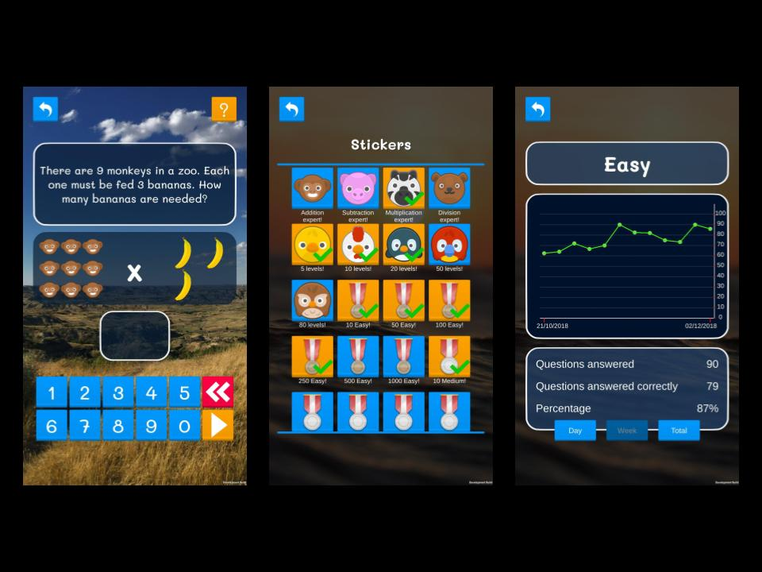
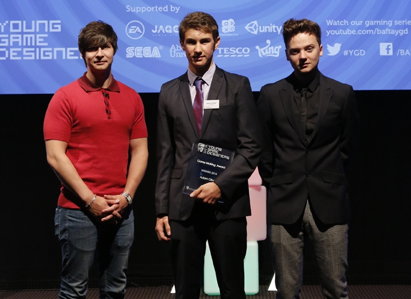

Screenshots from Mega Maths
Personal Projects
I've had a passion for game design and development since I discovered Scratch at age 11, and I've enjoyed making films for even longer. After leaving school, I released 2 Unity games, and landed my first job as a UI programmer at Pixel Toys. Since then I've continued to learn new creative skills, I've released another Unity game, and I'm now taking a part-time film course with the NFTS.

Mega Maths
I created Mega Maths because someone close to me needed more help,
and practice, with their maths, and I decided it would be a
worthwhile project to create an easy-to-use app that teaches Key
Stage 1 maths in a cute, child-friendly and rewarding way.
The app has 100 worded questions, localised into 4 languages, as
well as random question modes in easy, medium, hard and expert
difficulty. The random modes each have a stats page, where a parent
can see a graph of their child's success rate per session.
AlienX
AlienX was one of my first game projects - a game I created in
GameMaker Studio while I was at school. It won the BAFTA Young Game
Designer's Game-Making award in 2014.
Alienx was a crossover of Lemmings and a tower defence. Across a
variety of maps, different types of aliens would spawn and try to
cross from left to right, attacking your base. You could place traps
such as bombs, water sprinklers, and even simple electrical
connectors to manipulate the environment and try to prevent the
aliens from crossing the map.

BAFTA Young Game Designer's awards ceremony
Photography
Outside of game-making, I love nature and wildlife photography, as well as film-making. I'm currently taking a part-time film-making certificate course with the National Film and Television School, to expand my creative skillset, teaching me transferable skills like directing, production, lighting and composition.